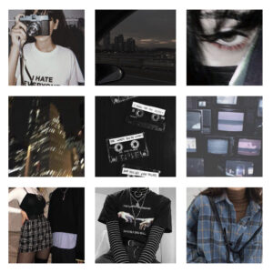

This style is based on 90s inspired clothes, with a huge influence from bands like nirvana. It could also be considered the new “emo” or “edgy”. Usually depicted with vinyl records, cigarettes, and the color black. The styles were very similar to the “gothic” or “e-girl” aesthetic, except involves emphasized make up and less chains. Main Colors: black and other dark versions of red
